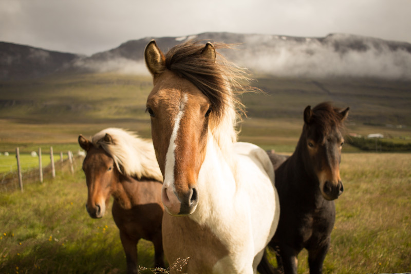

5 питань про дифтерію
Що ж воно таке і звідки береться?
Дифтерія відома людству давно – про неї згадував ще Гіпократ у своїх трактатах в 4 ст до н.е. Звичайно, на фоні інших епідемій у середні віки, дифтерія трохи блекла, вбиваючи переважно маленьких дітей та будучи однією з головних причин саме дитячої смертності. Однак і дорослим добряче діставалося – в 17-18 столітті ця манюсінька бактерія (Corynebacterium diphteriae) в Європі косила цілі сім'ї.
Із винайденням протидифтерійної сироватки та вакцинації від дифтерії, розвинені країни у 20-му столітті майже розпрощалися із цією хворобою. Епідемія дифтерії в дев'яностих на території країн колишнього Радянського Союзу стала промовистим прикладом для інших країн, як "не треба", підкресливши таким чином важливість не лише вакцинації дітей, а й вчасної ревакцинації дорослих.
Сьогодні дифтерія нерідко зустрічається в мало розвинених країнах, у таборах біженців, та місцевостях, де люди живуть в бідності та тісноті. Для порівняння, за даними CDC, з 2004 по 2017 роки на території США було зафіксовано 2 випадки дифтерії. У світі, за даними ВООЗ, зарєєстровано 7100 випадків дифтерії,в Україні за поточний 2019 рік – 20 випадків.
Зважаючи, що відсоток вчасно вакцинованого дорослого населення в Україні наразі доволі низький, занепокоєння з цього приводу виникає цілком справедливо.
Хвороб багато, всі страшні, чим дифтерія страшніша?
Коли починається дифтерія, відразу відрізнити її від ГРЗ чи ангіни не так вже й просто. А хто зараз із болем у горлі стрімголов біжить на бакпосів? Тому носії хвороби можуть ще певний час контактувати із іншими людьми та далі поширювати збудник. До слова, інфекція передається повітряно-крапельним шляхом та гарно виживає в навколишньому середовищі, наприклад, на предметах побуту чи іграшках протягом доволі тривалого часу.
Коринебактерії формують на верхніх дихальних шляхах щільні плівки, які швидко наростають та спричинюють смерть від задушшя. Особливо це критично для маленьких дітей.
Окрім цього, дифтерійні коринебактерії продукують токсин, який вражає тканини слизових оболонок, міокарду, нирок та нервової системи. Зволікання із введенням антитоксину може бути критичним, бо антитоксин взаємодіє лише із вільним токсином і не є ефективним по відношенню до токсину, що вже зв'язався із тканинами.
Чому антибіотики можуть не допомогти?
По-перше, дифтерійні коринебактерії, як і інші мікроби, також можуть "впадати в гріх" та з часом набувати антибіотикорезистентності.
Окрім того, бактерії у біоплівці є значно стійкішими до дії антибактеріальних речовин, ніж бактерії в суспензії. А за деякими даними, дія низьких доз антибіотиків може навіть посилювати плівкоутворення.
"Не хочу вакцину, як захворію, буде антитоксин..."
Іноді можна зустріти думку, що, мовляв, для чого вакцинуватися, якщо є антитоксин і його можна буде використати для лікування, якщо таки спіткає.
Якщо раптом таке небажання виникає у когось через "індійські вакцини", то відразу маємо зауважити, що антитоксин найімовірніше матиме таке ж походження. Але ризик виникнення побічних ефектів та ускладнень при цьому будуть значно вищі (не залежно від країни походження препарату). Бо антитоксин – це очищена фракція плазми крові коней і її введення саме по собі асоційоване з рядом ризиків, як наприклад, сивороткова хвороба, та вища, у порівнянні із викцинами, ймовірність алергічної реакції чи анафілактичного шоку.
Для отримання цього препарату протягом певного часу коням колять дифтерійний токсин, чекають поки в них виробиться імунна відповідь, набирають у них кров, виділяють із неї потрібні імуноглобуліни і фасують в баночки.
Виготовлення ж вакцин відбувається "в пробірці": бактеріальну культуру розмножують, виділяють та очищують токсин, обробляють його таким чином, щоб залишилася лише та частина молекули, яка відповідає за виникнення імунітету (тобто сам анатоксин, який входить до складу вакцин, токсичних властивостей не проявляє).
І якщо напрацювання вакцин можна спланувати відповідно до календаря щеплень, то спрогнозувати, скільки може знадобитися антитоксину і скільки коників запускати для цього в роботу у випадку виникнення епідемії – може бути доволі не просто.
Про ревакцинацію
Нагадуємо, що згідно календаря щеплення, вакцинуватися від дифтерії необхідно в 2, 4 та 6 місяців, 1.5, 6, 16 років та далі, що не менш важливо – кожні 10 років.
Якщо ж з якихось причин ревакцинації в дорослому віці не було, але в дитинстві було отримано хоча б три дози вакцини, щоб знову відновити імунітет, достатньо однієї ін'єкції.
Якщо ж ваш вакцинальний статус невідомий, треба отримати щонайменше три дози вакцини з чітким інтервалом: спочатку перша доза, через місяць – друга, через 6 місяців після другої – третя.

Photo by Fabian Burghardt on Unsplash